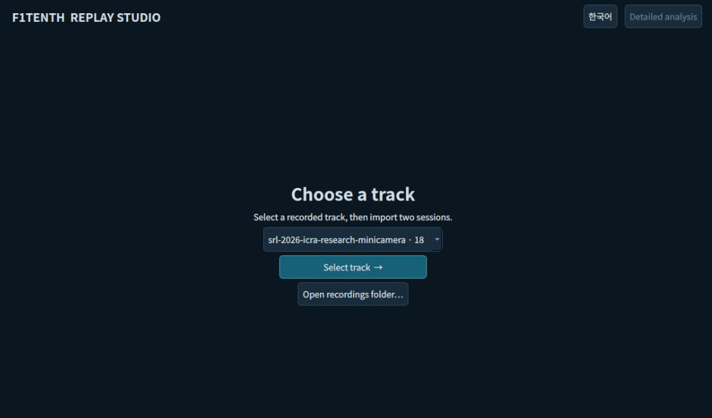
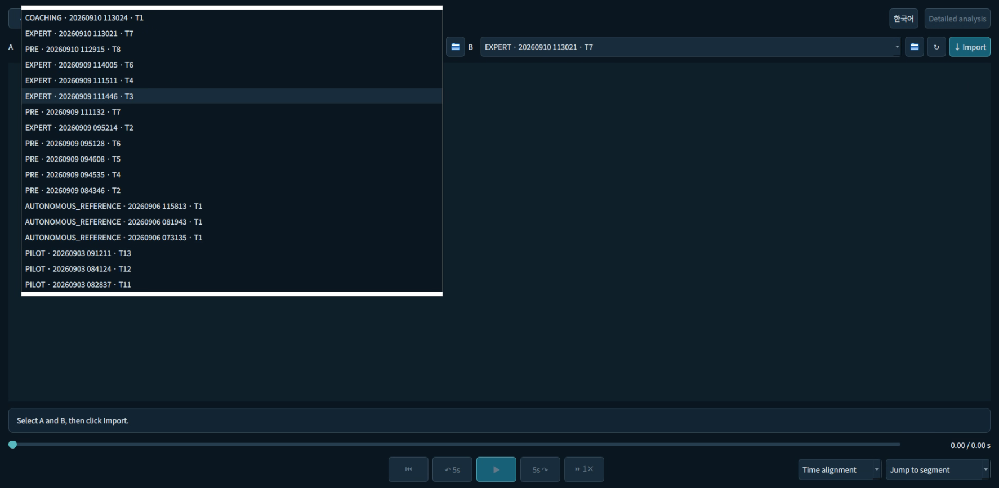

Replay Studio
Inspect recorded driving, from the full trajectory to a single control signal.전체 궤적부터 개별 제어 신호까지, 기록된 주행을 살펴봅니다.
1. Select, Import & Compare
Select the recorded map first, then choose A/B sessions and import them. A/B designate the two selected recordings, not fixed Human/Expert roles.기록된 맵을 먼저 선택한 뒤 A/B 세션을 골라 불러옵니다. A/B는 선택한 두 기록이며 Human/Expert 역할로 고정되지 않습니다.
PRE–PRE and EXPERT–EXPERT comparisons are supported; before/after order is selected by the researcher.[5]PRE–PRE와 EXPERT–EXPERT도 비교할 수 있고, 전후 순서는 연구자가 지정합니다.[5]


01 · Select A
Choose the first recording from the map-filtered list. Stage, date/time and trial help identify the intended run; the folder button can select a session directly.선택한 맵의 목록에서 첫 번째 기록을 고릅니다. 단계·기록 시각·Trial로 원하는 주행을 확인하고, 폴더 버튼으로 세션을 직접 지정할 수도 있습니다.
02 · Select B & Import
Choose the comparison recording in B, then click Import. Both selections are required. A/B can be two manual runs or two expert runs, not only human versus autonomous.B에서 비교할 기록을 고른 다음 Import를 누릅니다. 두 기록을 모두 선택해야 합니다. 수동 주행끼리, 자율 기준 주행끼리도 비교할 수 있습니다.
2. Signal Analysis
Speed
Compare Actual, Target and PP speed to locate deceleration onset, minimum corner speed, acceleration recovery and lag behind the target. Check the pedal traces to distinguish braking from other causes of slowing.Actual·Target·PP 속도로 감속 시작점, 코너 최저 속도, 가속 재개 시점과 목표 속도에 대한 응답 지연을 확인합니다. 브레이크로 감속한 것인지 구분하려면 페달 기록도 함께 살펴봐야 합니다.
Steering
Human, PP and Applied traces reveal turn-in timing, peak steering and repeated left/right corrections. A deviation from PP is a comparison signal, not automatically a driving error.Human·PP·Applied로 코너 진입 조향 시점, 최대 조향량, 좌우 반복 수정을 확인합니다. PP와 다르다는 이유만으로 잘못된 조작이라고 판단하지는 않습니다.
Pedals / Throttle
Compare accelerator and brake use with throttle output to inspect pedal-release timing, braking duration and re-acceleration. Throttle is the control output, not the pedal position.가속·브레이크 입력과 스로틀 출력으로 페달을 놓는 시점, 제동 지속 시간, 재가속 시점을 확인합니다. 스로틀은 제어 출력이며 페달을 밟은 깊이와 같은 값이 아닙니다.
Events & Windows
Seek recorded events and compare selected passages. Missing values remain unavailable rather than becoming zero.기록된 이벤트 시점으로 이동하거나 원하는 구간을 골라 비교합니다. 수집되지 않은 값은 0으로 채우지 않고 데이터 없음으로 처리합니다.
3. Playback & Alignment
Time alignment compares the runs at the same elapsed time. Position alignment compares observations at similar progress along the reference path, which helps when lap speeds differ.Time alignment는 같은 경과 시간끼리, Position alignment는 기준 경로상의 비슷한 진행 위치끼리 비교합니다. 주행 속도가 다른 기록을 같은 코스 구간에서 살펴볼 때 위치 기준이 유용합니다.
Detailed plots still use the selected window’s elapsed time; their vertical cursors show the currently observed sample.상세 그래프의 가로축은 선택 구간의 경과 시간이며, 세로선이 현재 관측 시점을 가리킵니다.
Restart, skip −5/+5 seconds, play/pause and change playback rate. The replay ends at the later recording endpoint; an earlier-ended recording holds its last observed position. 처음으로 이동, 5초 앞뒤 이동, 재생·일시정지, 배속 조절을 지원합니다. 두 기록이 모두 끝날 때까지 재생하며, 먼저 끝난 차량은 마지막으로 기록된 위치에 머뭅니다.
Time/position alignment and segment navigation support inspection, while detailed plots use elapsed time in their selected windows.[5]시간 또는 경로상의 위치를 기준으로 비교할 수 있고, 상세 그래프는 선택한 구간의 경과 시간을 기준으로 표시합니다.[5]